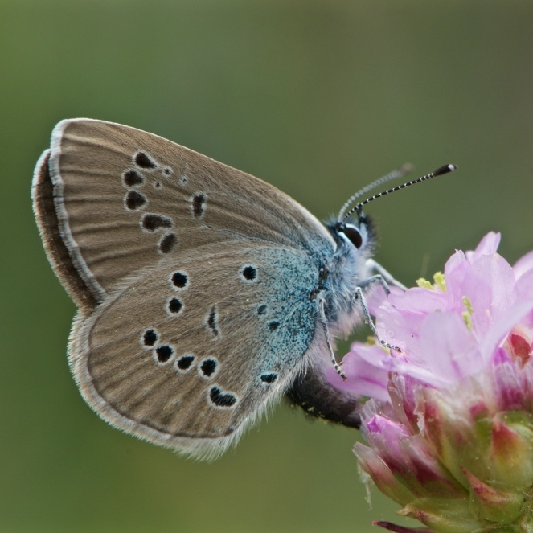

Male
Female

Side view
Cyaniris semiargus
- Common name
- Mazarine Blue
- Deutscher Name
- Rotklee-Bläuling
Violetter Waldbläuling
- Family
- Lycaenidae
- Family common name
- Gossamer-winged Butterflies
- On the wing
- May - September
two generations
- Habitat
- Nutrient-poor grasslands, forest clearings, fens, extensively cultivated meadows and pastures, and mountain meadows.
- Larval host:
- Trifolium species such as Trifolium medium (zigzag clover), T. pratense (red clover), or T. ochroleucon (sulphur clover).
Range Map
Seasonality